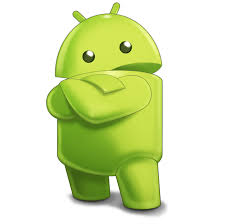

A Criação do Bugdroid
Do desenho ao ícone mundial
Com o tempo, a ideia de criar um mascote oficial foi levada mais a sério. A ilustradora russa Irina Blok recebeu a missão de desenhar um personagem simples, amigável e memorável. Assim nasceu o Bugdroid, o atual símbolo do Android, inspirado nos ícones de banheiro — isso mesmo! Irina queria algo direto, fácil de identificar e universal. 
Quer saber mais?
Além do mascote e dos nomes doces, o Android passou por inúmeras evoluções em design, segurança e funcionalidades. Se você ficou curioso, acesse o site oficial do Android History e descubra como o sistema se transformou ao longo dos anos.